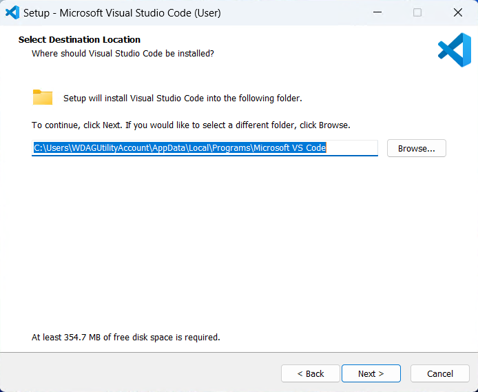
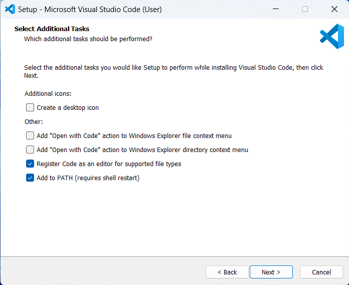
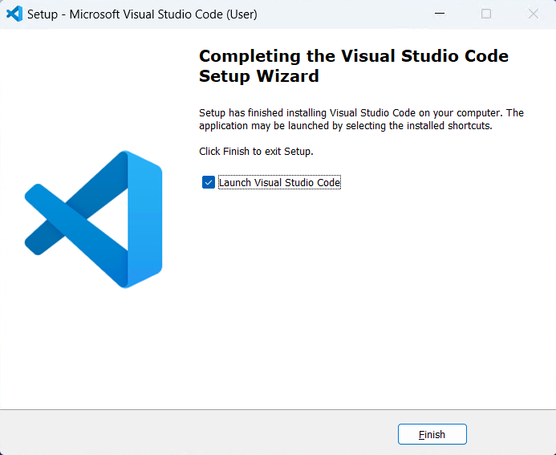

VSCode Install Step by Step
以 Windows 下的 User Installer 为例
用户协议

点击 I accept the agreement 然后 Next > 即可。
安装目录

选择想要 VSCode 安装的目录，无特殊要求默认即可。
开始菜单条目

此项决定 VSCode 在 开始菜单 中的程序名。
如不希望加入到开始菜单中，勾选左下角的 Don't create a Start Menu folder 即可。
额外选项

| 选项 | |
|---|---|
| Create a desktop icon | 创建桌面快捷方式 |
| Add "Open with Code" action to Windows Explorer file context menu | 在文件资源管理器右击文件菜单添加“使用 Code 打开” |
| Add "Open with Code" action to Windows Explorer directory context menu | 在文件资源管理器右击文件目录菜单添加“使用 Code 打开” |
| Register Code as an editor for supported file types | 将 VSCode 注册为受支持的文件的编辑器 |
| Add to PATH (requires shell restart) | 添加至系统变量（重启终端生效） |
确认配置

安装完成
